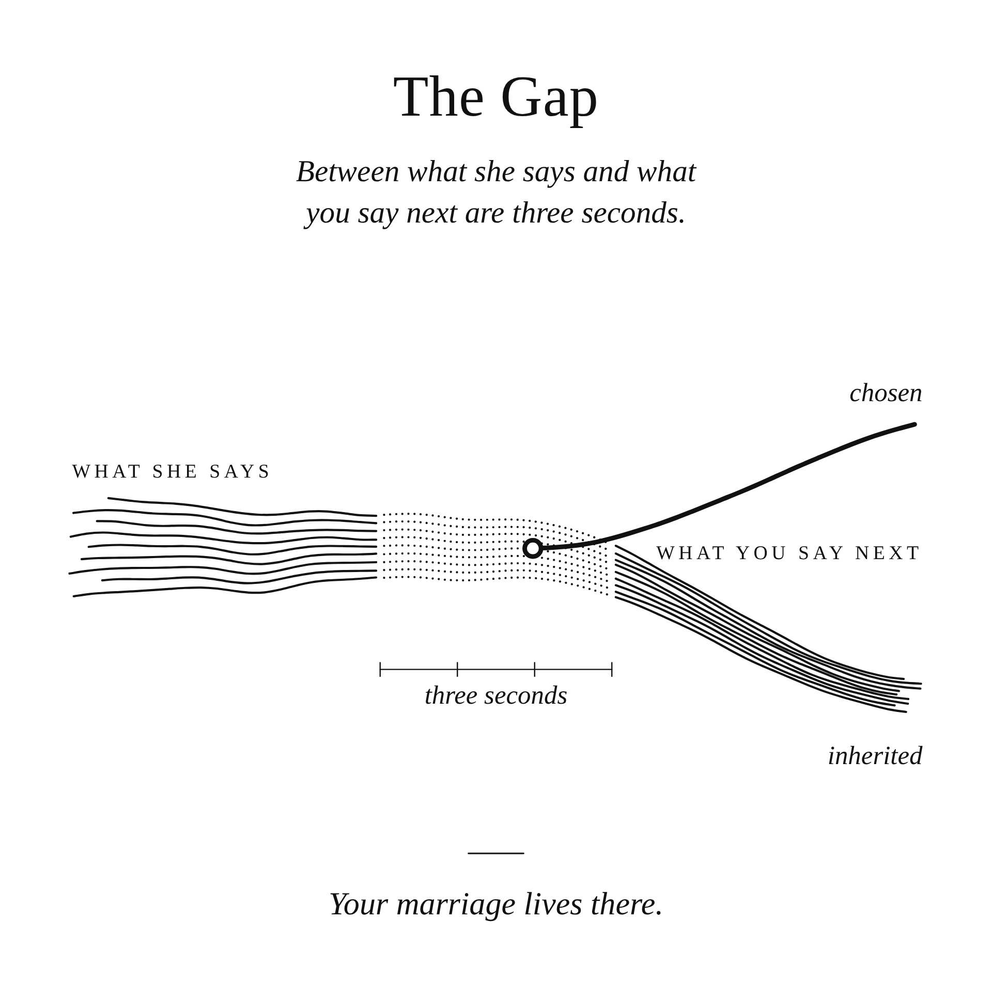
The moment between her words and your reply is a chance to choose your response instead of repeating an old habit.
What she says arrives from the left as a current of lines. In the open gap, measured as “three seconds,” the lines run on dotted, not yet said, and unless something changes they slide into the old worn channel marked “inherited.” One bold line leaves the current from a small ring inside the gap and rises to “chosen”: a reply started on purpose. Dotted means not yet said: nothing in the gap has been answered, so either channel is still open.
Where does the current go if nothing is chosen in the gap, and what does the one bold line show the husband can do instead?
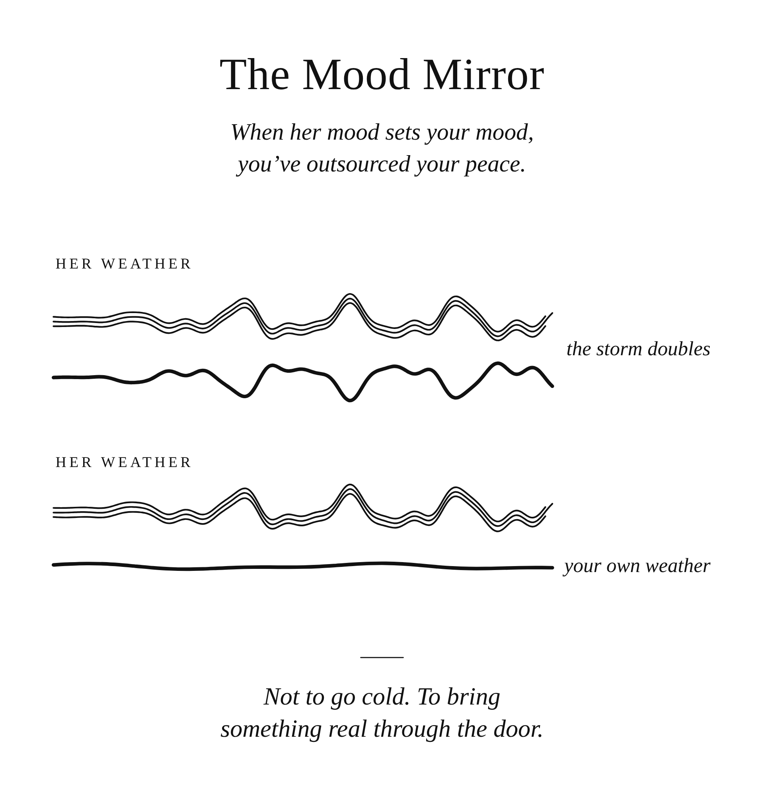
Bring your own steadiness into the room while remaining caring and engaged, rather than letting her mood determine yours.
Both rows begin with the same “Her weather”: three close lines, calm at the left and building into a storm. In the upper row his bold line is its mirror image, and the label reads “the storm doubles.” In the lower row his bold line keeps a gentle motion of its own, “your own weather.” His line still moves. The caption, “Not to go cold. To bring something real through the door.”, says that steadiness is not flatness or a wall shutting her out.
Her weather is the same in both rows. What does his line do differently in the lower row, and how would that show up in an evening together?
Repeated defensiveness teaches your wife that telling you the truth is not worth the cost. Keeping that conversation open starts with how you receive it.
The same doorway appears four times: “she brings something,” “you defend,” “she updates,” “she stops.” Light coming through the opening fans across the floor. Each defence swings the door a third further shut and the light narrows with it, until the door is closed and none reaches the floor. The light stands for her willingness to bring you the truth, not for how much she has left to say.
What is being shut out as the door closes, and what is closing it?
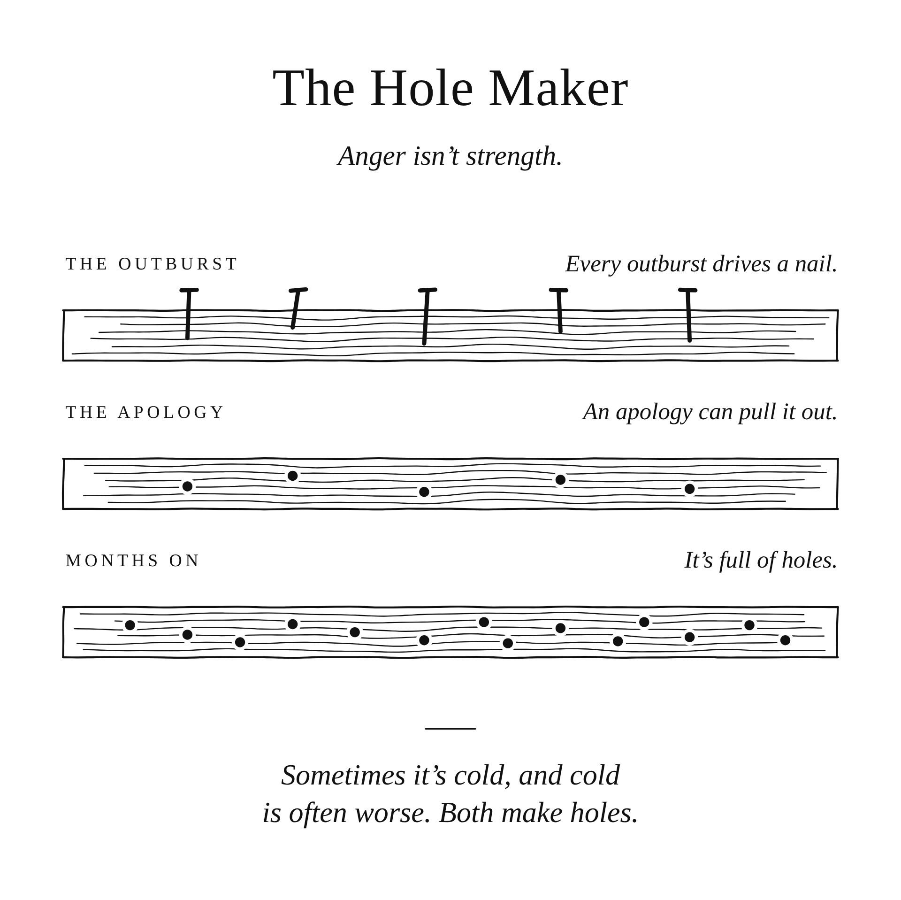
An apology matters, but it does not make the hurt of an outburst disappear. Repeated anger leaves damage that must be taken seriously.
The fence board from the father’s story appears three times. “The outburst”: “Every outburst drives a nail.” “The apology”: “An apology can pull it out,” and the nails are gone but their holes sit exactly where the nails were. “Months on”: “It’s full of holes,” and the grain never closes over them. The board represents the relationship carrying the consequences. The caption includes cold anger as well as loud anger, “Both make holes”; the picture warns about repeated harm rather than providing a timetable for repair.
What changes after the apology, what remains, and what does the last board add?

A pause helps only if you return to the unresolved concern and speak plainly. The plate uses “The Courage to Come Back”; the distillation still names “The Remaining Nails.” That naming discrepancy remains unresolved.
The same man walks in twice. In “Goes quiet,” he walks out smaller, with the dotted outline of the size he walked in at still standing around him, and the line across the room is dotted: “the real thing, never said.” In “Goes back,” he walks out the same size and the line is solid: “the real thing, said.” Keeping his size means keeping his voice and self-respect, not winning the argument or securing her agreement.
Why does the man walk out smaller in the upper row, and what makes the lower row different?
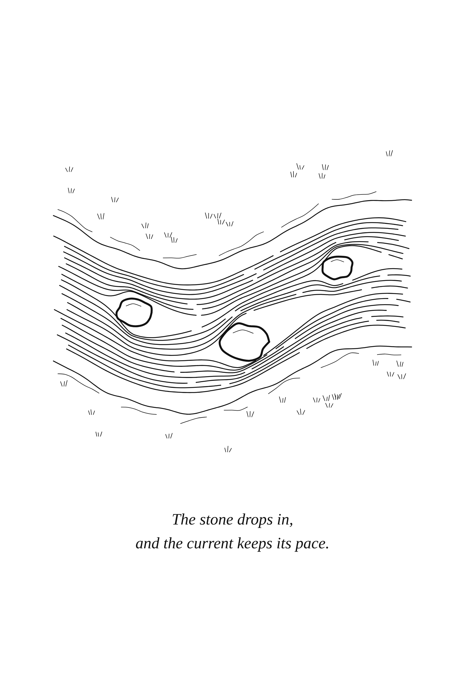
Steadiness is repeated daily practice. Patiently holding your direction through difficulty can shape a marriage over time.
A river crosses the page between two banks, with three stones in the current. The lines of water part around each stone, pass it, and close up again downstream, and the river keeps its course. The caption reads “The stone drops in, and the current keeps its pace.” The stones are the difficulties; the river neither fights them nor stops for them. Steadiness here is holding direction, not pushing the stone out of the way.
What does the water do when it meets a stone, and what might that suggest about a husband’s daily choices?
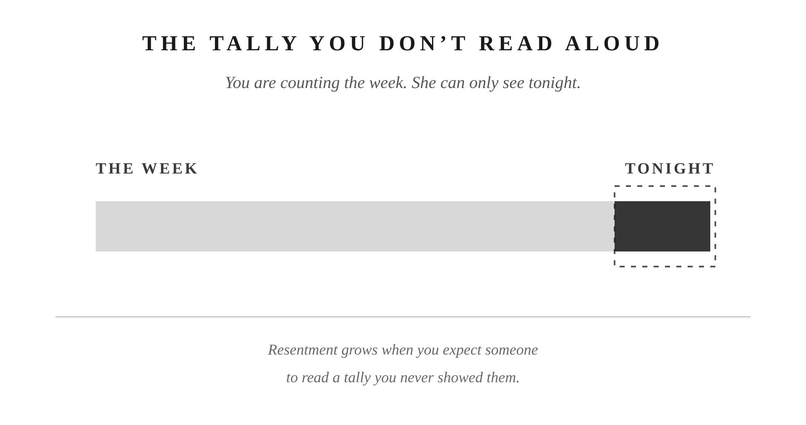
What your wife sees tonight may be only a small part of what you contributed this week. Expecting her to know the unseen total feeds resentment; notice each other’s work rather than defending a private score.
Seven days of tally marks run under “The week”: everything he has been counting. One bold frame surrounds the last day, “Tonight,” and it holds a single mark. The frame is what she can actually see. The marks outside it still happened; the frame represents the limited view available in the moment, not the full measure of either spouse’s contribution.
What is inside the frame compared with the rest of the week, and why might that difference matter at home?
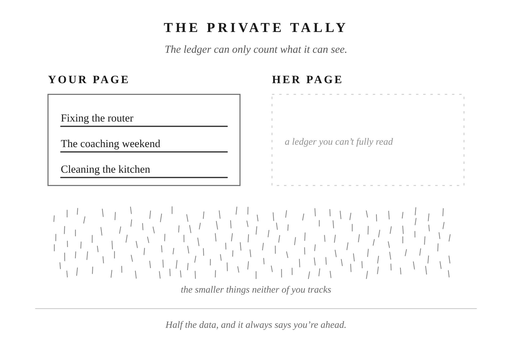
Your mental score cannot fairly measure who gives more because you know your own contributions best and miss much of hers. Give with care and appreciate what you cannot count.
An open ledger. “Your page” has three entries you can read: “Fixing the router,” “The coaching weekend,” “Cleaning the kitchen.” “Her page” is just as full, but every line is dotted: “a ledger you can’t fully read.” Her page is unavailable to you, not empty of effort. Beneath the book, a field of small marks is “the smaller things neither of you tracks.” Together, these show why a private tally is incomplete.
What can you read on each page, and what do the marks beneath the book suggest about keeping score?
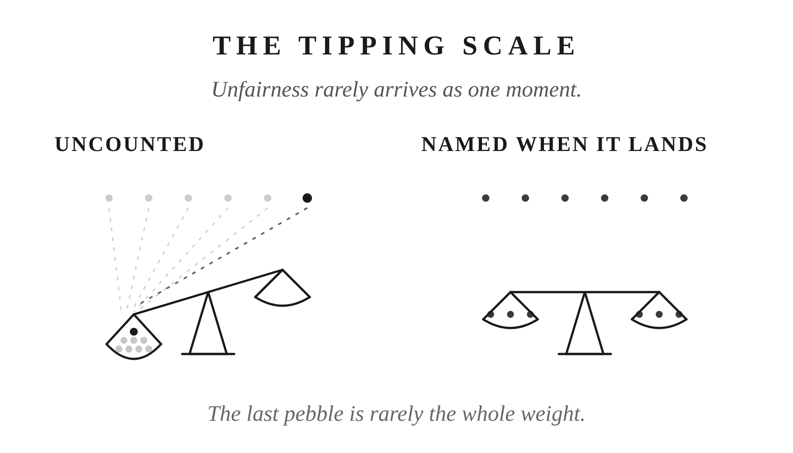
A grievance that feels sudden may carry weeks of small, unnoticed disappointments. Notice and address things as they happen instead of treating the last incident as the whole problem.
Two stretches of still water over a riverbed. Under “Uncounted,” pebbles have settled into a mound beneath the surface, where none of it shows, until one dark pebble on top, “the last pebble,” lifts the surface. That one is all he sees. Under “Named when it lands,” the same number of pebbles lie in one layer and the water stays calm. The caption reads “The last pebble is rarely the whole weight.” The contrast is unacknowledged versus acknowledged, not an instruction to keep both spouses’ scores equal. Naming something does not by itself guarantee resolution.
Why does the surface break on the left and not on the right, and what does the last pebble mean?
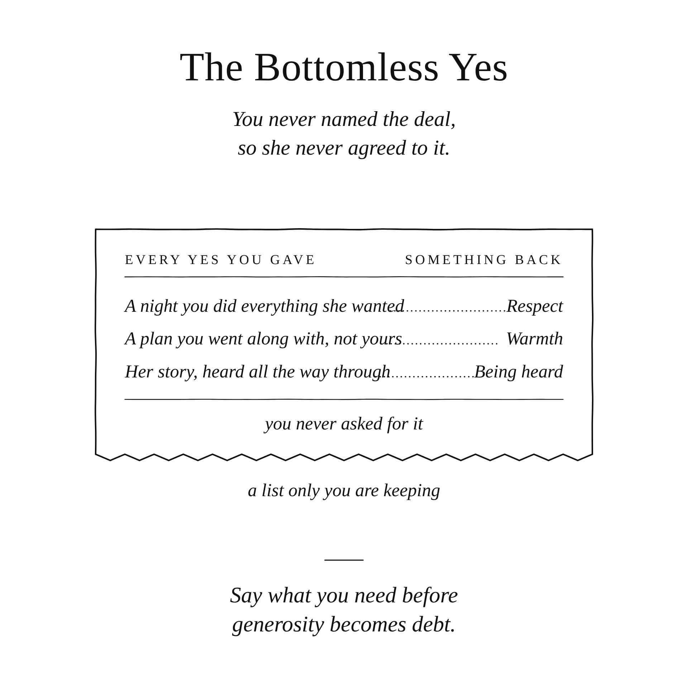
Giving while silently expecting a return can become resentment over a deal your wife never agreed to. Say what you need clearly before generosity becomes a private debt.
A bill he wrote and never handed over, torn along the bottom. Under “Every yes you gave” are items such as “A night you did everything she wanted,” each joined by a dotted leader to what he expected under “Something back”: “Respect,” “Warmth,” “Being heard.” Where the total would be, it reads “you never asked for it.” Below the tear: “a list only you are keeping.” The picture describes an unspoken bargain, not proof that she owes repayment or gives nothing.
What did each yes expect back, and what does the line where the total should be tell you?
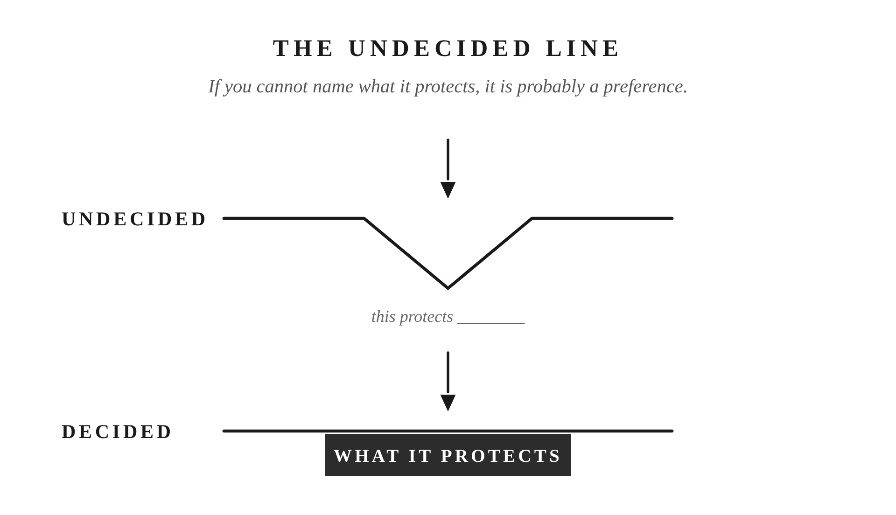
Before defending a boundary, be able to say what it protects. A named purpose gives you something more solid than an unexplained preference to hold and discuss.
A boundary is drawn as a picket fence. Under “Undecided,” the fence stands around nothing and has folded over; its label, “this protects,” ends in a blank line. Under “Decided,” the same fence stands upright around a young tree, “what it protects,” and holds. The tree is the one bold thing: a clear reason for the boundary, not force applied to your wife.
What keeps the right-hand fence standing, and how would you name that in an actual disagreement?
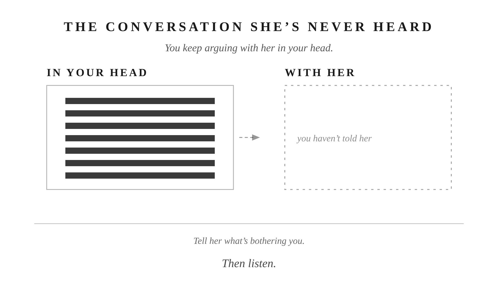
Rehearsing an argument in your head does not tell your wife what is bothering you. When the problem needs a conversation, explain it kindly, ask clearly, and listen without demanding immediate agreement.
Over the man’s head, a tangle of loops is the whole argument, “In your head,” going round. She is standing across the room, “With her.” The only thing between them is a dotted line, “you haven’t told her,” because none of it has been said. “Tell her what’s bothering you. Then listen.” supplies the next action; the dotted line does not mean she has refused to listen.
Where is the argument happening, and what would turn the dotted line between them solid?
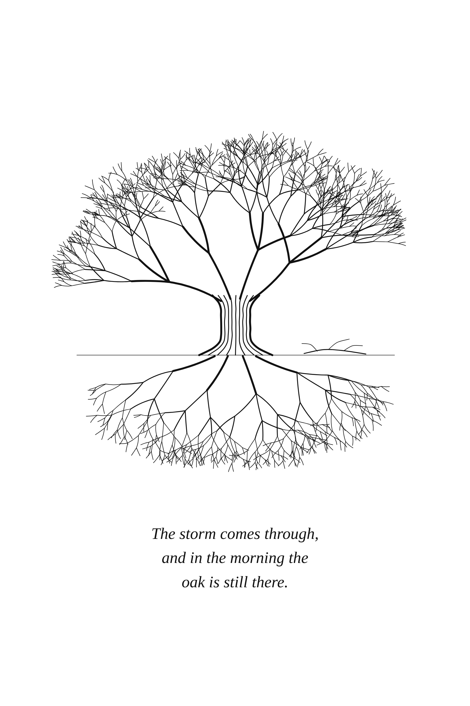
Be dependable through difficulty. Strength includes continuing to offer support after hard seasons have left their mark.
A broad oak the morning after a storm: bare, with one limb down on the ground beside it, and the trunk and roots untouched. The roots go as deep below the ground as the crown is tall above it. The caption reads “The storm comes through, and in the morning the oak is still there.” The fallen limb shows the storm left its mark. The image is meant to show lasting through difficulty, not a life without damage or strain.
What has the storm done to this tree, what has it not done, and what kind of strength might that represent in a husband?
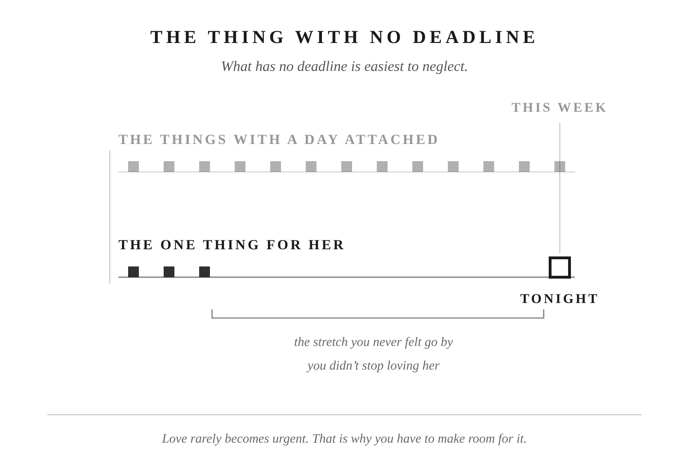
Romance is easy to neglect because nothing makes it urgent. Make room for care that is specifically for her before another week disappears.
Two strips from the same three weeks of calendar. “The things with a day attached” has a tick in every square. “The one thing for her” has ticks in its first three squares, then empty squares, “the stretch you never felt go by,” up to a bold open square at “Tonight,” an opportunity still available. The contrast is between what the schedule demands and what you must choose to make room for; the squares are illustrative, not measured data.
What accounts for the empty stretch on the lower strip, and what does the bold square at the end offer?
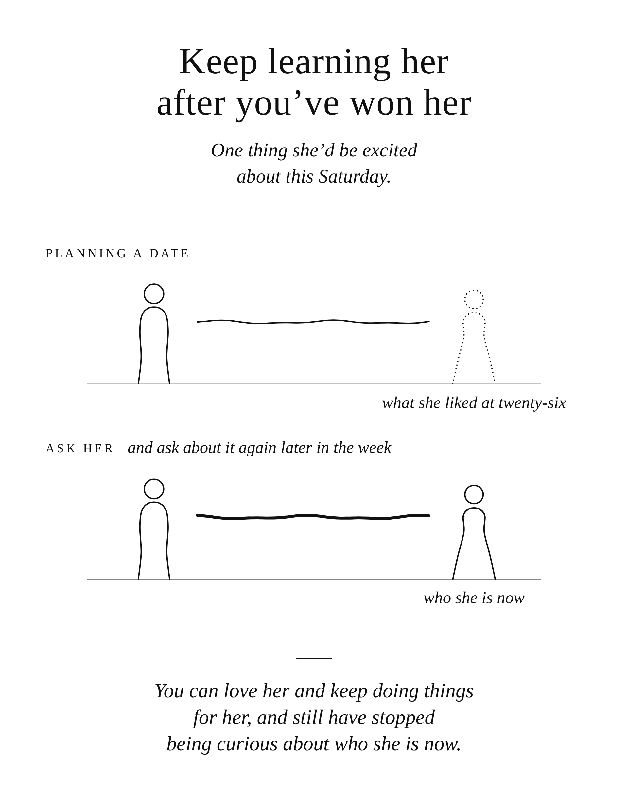
You can love your wife and keep doing things for her, and still have stopped being curious about who she is now. Keep learning who she is now, and ask again.
The same man, two ways of finding the chapter’s own test, “One thing she’d be excited about this Saturday.” In “Planning a date,” a plain line runs from him to a dotted woman: “what she liked at twenty-six.” In “Ask her and ask about it again later in the week,” a bold line reaches a solid woman: “who she is now.” The takeaway under the drawing is the idea in one sentence: you can love her and keep doing things for her, and still have stopped being curious about who she is now. It concedes the love and the effort, so the upper row reads as real effort on old information, not as the wrong move and not as an accusation. It does not say that remembering is useless. The chapter says remembering the answer is what she notices.
Both lines reach a woman. Why is one of them dotted, and what does the lower row do that the upper does not?
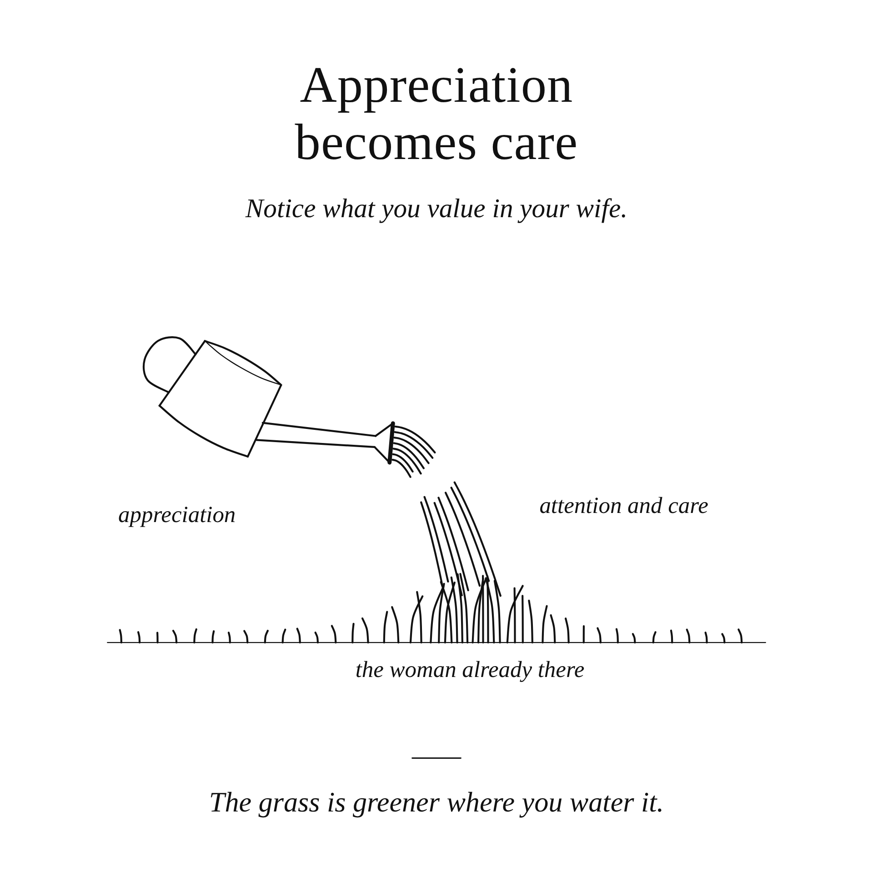
Notice what you value in your wife and let appreciation become an ordinary act of care for the life you share.
A watering can labelled “appreciation,” tipped to pour; its loop handle, body, long spout and flared rose make the object recognizable. Water leaves the rose in fine arcs, “attention and care,” and lands on one stretch of grass, “the woman already there.” The grass stands tall and thick exactly where the water lands and thins out on either side. The caption is the chapter’s line, “The grass is greener where you water it.” The image draws appreciation becoming care through contact between water and grass. The grass is already there; the water does not grow her into something else, which is the chapter’s idea of enough. There is no before/after comparison or returning arrow.
Within ten seconds, can a stranger recognize a watering can watering grass, identify attention and care as the water, see why the grass is thickest where it lands, and understand appreciation for the woman already there becoming care? Does the image imply she owes a response?
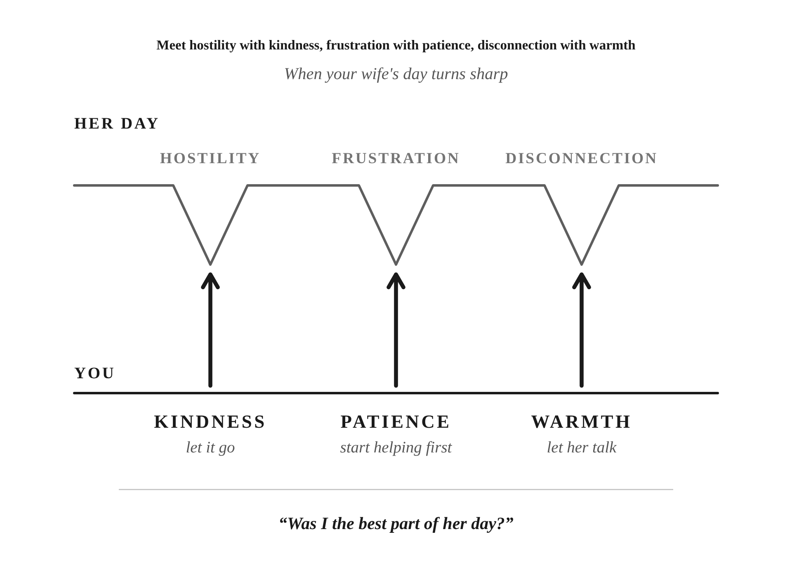
When your wife says something sharp, hear it as a sign of how she feels, help before you answer, and ask yourself whether you were the best part of her day.
Three small scenes with the same two people; he is the bold figure. Above each is what her day brings, below it what he meets it with. “Hostility,” “Kindness,” “let it go”: her sharp remark, a jagged line, goes past his shoulder and keeps going. “Frustration,” “Patience,” “start helping first”: the basket that was at her feet, now dotted, stands at his. “Disconnection,” “Warmth,” “let her talk”: her words reach him and he says nothing back. Nothing jagged goes back in any scene. The deck reads “When your wife’s day turns sharp.” and the caption, in the chapter’s quotation marks, “Was I the best part of her day?” The question is his, asked of himself; it is not a promise. His silence in the third scene is listening, not withdrawal.
Without the chapter, does each scene read as him taking something from her day rather than returning it, and does the third read as letting her talk rather than ignoring her?

Calm and strength make the marriage sound, but calm alone can go cold; warmth, kept up every day, is what makes the sound house a home, and with all three at once the marriage is at peace, at its best, and flourishing.
The same house twice, mirrored about the centre. Its two bold walls are “Calm” and “Strength,” labelled separately as two qualities in him. On the left that is all there is: the door shut, the window unlit, “calm alone can go cold” above and “structurally sound” below. On the right, under “Warmth” at the eaves, the window is lit, the door stands open with light on the step, and smoke rises from the chimney; “small, warm things” above, “a home” below. The walls are the same in both, so warmth is what turns a sound house into a home. Deck: “Warmth is what the calm and the strength were for.” Closing line: “At peace, at its best, and flourishing.” The image is the chapter’s own house, calling back the Introduction’s “A house can be structurally sound and still feel cold”.
Without the chapter, do the lit window, open door and smoke read as what turns the sound house into a home, or as decoration on a house that was already finished? Do the walls read as two qualities in him, or as him and her?
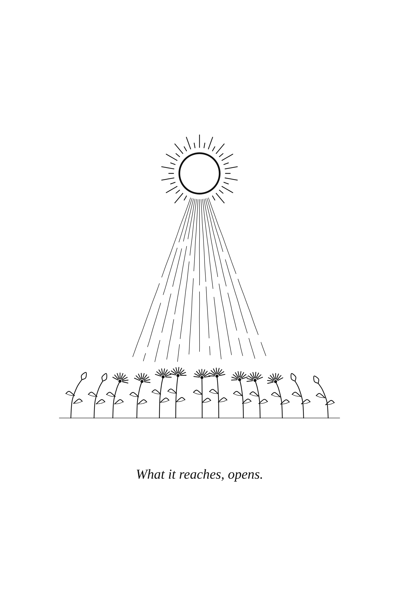
Offer warmth consistently through attention, affection, and generosity. Warmth invites openness without demanding gratitude or a particular response.
The sun stands over a row of flowers, and every stem leans toward it. A cone of fine rays reaches down to the middle of the row; where that light falls the flowers are open, and beyond it they are still shut. The caption reads “What it reaches, opens.” Nothing pulls the flowers open; the light only reaches them. The shut buds at either end are not refusing anything; the light has not reached them.
Why are some of the flowers open and others shut, and what feeling or action in a marriage does that bring to mind?